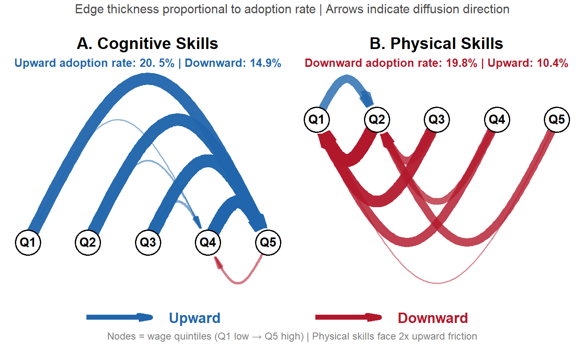
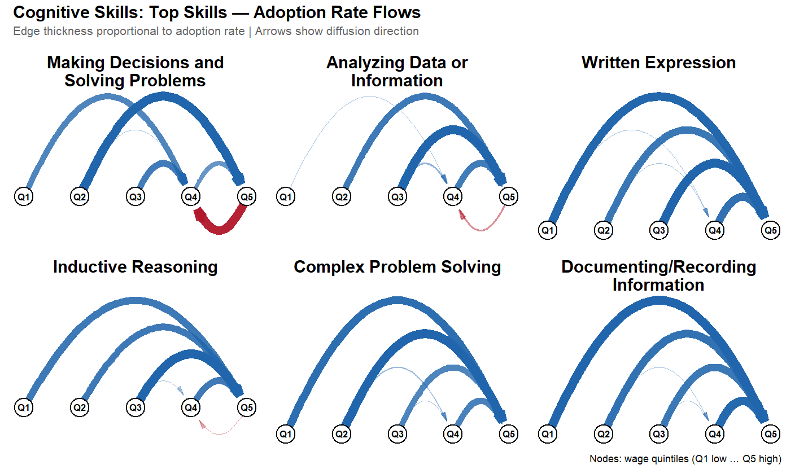
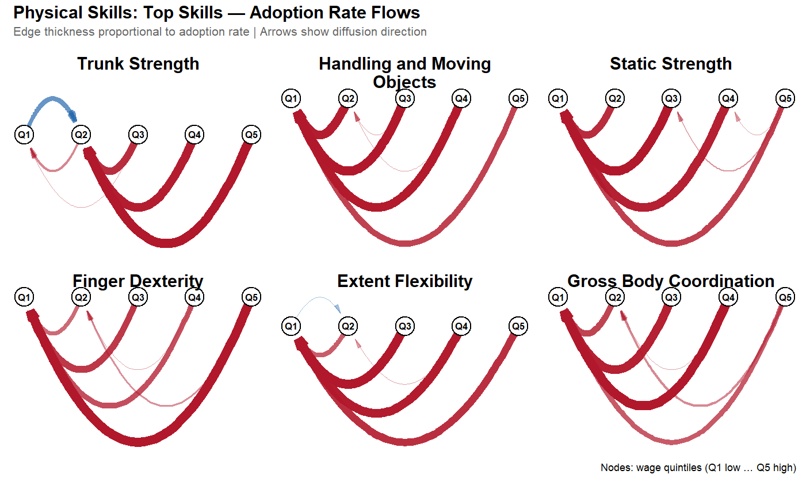
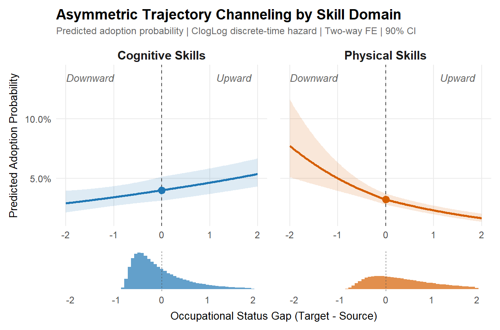
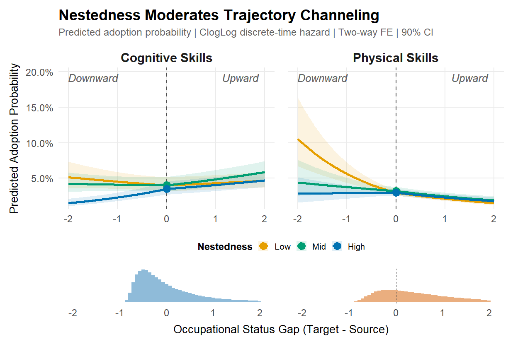

Structurally Conditioned Diffusion Reproduces Skills-Based Stratification
How Skill Requirements Propagate — And Why They Preserve Hierarchies
Roberto Cantillan & Mauricio Bucca
Department of Sociology | Pontificia Universidad Católica de Chile
The Puzzle
What we know:
- Labor markets are organized around unequal occupations differing in skills, wages, and credentials
- A polarized skill space: socio-cognitive vs. sensory/physical domains align with education and wages
- A nested hierarchy: enabling capabilities sit higher, command wage premia, require longer education
What we don’t know:
How do skill requirements propagate between occupations — and why does this process reproduce hierarchies?
The Architecture We Build Upon
Polarization (Alabdulkareem et al. 2018)
- Skills cluster into two domains
- Socio-cognitive: high education, high wages
- Sensory/physical: lower education, lower wages

The Architecture We Build Upon
Nestedness (Hosseinioun et al. 2025)
- Asymmetric dependencies: some skills “enable” others
- Nested architecture has intensified over time
- Position in hierarchy predicts wages, automation risk

I. THE PHENOMENON
Polarized Diffusion: Flow Networks

The Asymmetry: Directional Friction by Domain
Asymmetry means skills face different “friction” when diffusing up vs. down the wage ladder. The direction of this friction reverses between cognitive and physical skills.
| Cognitive | Physical | Interpretation | |
|---|---|---|---|
| Upward rate | 20. 5% | 10.4% | Cognitive climbs easily |
| Downward rate | 14.9% | 19.8% | Physical falls easily |
| Gap (Up - Down) | +5.6 p.p. | -9.4 p.p. | Opposite signs |
| Implication | Facilitates ascent | Blocks ascent | Polarizing force |
Physical skills face 1.9x more friction going up than going down

Average shift in wage quintiles (destination - origin). Core cognitive skills drift upward

Most physical skills drift downward or lateral (static strength, inspection, coordination)
Raw Gravity Patterns

Adoption rate by education gap, wage gap, and structural distance deciles
II. THE MODEL
Gravity Logic for Skill Diffusion
Classic Gravity Model:
The expected flow from origin \(i\) to destination \(j\) follows:
\[T_{ij} = k \cdot \frac{M_i M_j}{D_{ij}^{\gamma}}\]
where \(M_i, M_j\) = origin/destination mass, \(D_{ij}\) = distance, \(\gamma\) = distance sensitivity.
Log-linear form:
\[\log \mathbb{E}[T_{ij}] = \beta_0 + \alpha_i + \beta_j - \gamma \log D_{ij}\]
Application to skill diffusion:
- Some occupations are stronger senders (innovation-intensive)
- Others are more capable receivers (high absorptive capacity)
- Diffusion declines with cognitive, educational, or wage/status distance
Triadic Gravity: Incorporating Skills
Skill diffusion is inherently triadic: source occupation \(i\), target occupation \(j\), and skill \(k\).
Binary outcome:
\[T_{ijk} = \begin{cases} 1 & \text{if skill } k \text{ is newly adopted in } j \text{ after being established in } i \\ 0 & \text{otherwise} \end{cases}\]
Triadic gravity with skill-specific mass \(S_k\):
\[\lambda_{ijk} \propto \frac{M_i \cdot M_j \cdot S_k}{D_{ij}^{\gamma}}\]
Log-linear form:
\[\log \lambda_{ijk} = \beta_0 + \alpha_i + \beta_j + \delta_k - \gamma \log D_{ij}\]
Asymmetric Frictions: The ATC Mechanism
Standard gravity assumes symmetric distance costs. In occupational diffusion, this is unrealistic.
Directional decomposition of wage/status gap \(G_{ij}\):
\[\Delta^{\uparrow}_{ij} = \max(G_{ij}, 0) \quad \text{(upward: target higher than source)}\]
\[\Delta^{\downarrow}_{ij} = \max(-G_{ij}, 0) \quad \text{(downward: target lower than source)}\]
Core hypothesis — Asymmetric Trajectory Channeling (ATC):
Socio-cognitive skills face low upward friction; physical skills face high upward friction
This decomposition enables distinct coefficients for upward vs. downward flows — the central feature of ATC.
Modeling Skill Diffusibility
Instead of absorbing skill heterogeneity via unrestricted fixed effects (\(\delta_k\)), we model skill “mass” structurally:
Two theoretically grounded attributes:
- Domain (\(D_k\)): Physical vs. cognitive/socio-cognitive
- Nestedness (\(N_k\)): Low vs. high dependency in skill hierarchy
Skill mass parameterization:
\[\text{SkillMass}_k = \eta_0 + \eta_D D_k + \eta_N N_k + \eta_{DN} D_k N_k\]
This enforces meaningful structure in the skill space, rather than treating each skill as categorical noise.
Triadic Logistic Gravity Specification
With a binary outcome, we map latent intensity into probability via logistic link:
\[\text{logit}\big(\Pr(T_{ijk}=1)\big) = \beta_0 + \alpha_i + \beta_j + \eta_0 + \eta_D D_k + \eta_N N_k + \eta_{DN} D_k N_k\] \[+ \beta^{\uparrow} \Delta^{\uparrow}_{ij} + \beta^{\downarrow} \Delta^{\downarrow}_{ij} + \text{(interactions)}\]
Interactions (e.g., \(D_k \cdot \Delta^{\uparrow}_{ij}\), \(N_k \cdot \Delta^{\downarrow}_{ij}\)) reveal whether:
- Certain skill types face penalties in upward diffusion
- Physical/nested skills are preferentially funneled downward
Fixed effects:
- \(\alpha_i\): Source sending capacity
- \(\beta_j\): Target receiving capacity
- No full \(\delta_k\): Skill heterogeneity explained via domain × nestedness
Identification Strategy
Challenge: O*NET rolling panel creates “false zeros”
Solution: Interval-Censored Design
- Adoption = latent event within window
- Opportunity: source specializes, target does not
- Outcome: target crosses threshold
Estimation:
- Two-way fixed effects (source, target)
- Node-level bootstrap (B=1000) for valid inference
Diagnostics:
- Placebo leads (future gaps have no effect)
- Within-cluster permutation
- Worker-flow distances replication
- Out-of-sample prediction (2015-19 to 2020-24)
Data:
- O*NET 2015-2024 (161 descriptors)
- BLS wages and education
- About 5M dyadic opportunities
III. MODEL RESULTS

ClogLog discrete-time hazard. Two-way FE. 90% CI from node bootstrap

High-nestedness physical skills face more than 30 p.p. penalty at 2-quartile upward gap
Key Magnitudes
Coefficients (education gap, log-odds scale):
| Term | Cognitive | Physical | Interaction |
|---|---|---|---|
| Upward | +0.43 | -0.79 | -1.22 |
| Downward | +0.05 (ns) | +1.98 | +1.93 |
| Distance | -0.18 | -0.49 | -0.31 |
Interpretation:
- Upward gap boosts cognitive adoption, penalizes physical
- Downward gap has no effect on cognitive, strongly boosts physical
- Distance decay is steeper for physical skills
Robustness Summary
| Test | Specification | Result |
|---|---|---|
| Thresholds | RCA 0.9, 1.0, 1.1 | Pattern unchanged |
| Distances | Shortest path, resistance, cosine | Same relative slopes |
| Periods | 2015-18, 2019-21, 2022-24 | ATC persists |
| Bootstrap | Node-level B=1000 vs clustered SE | Ratio around 1.0 |
| Representation | Skill-skill vs occ-occ network | Ordinal match |
The asymmetry is not an artifact of thresholds, distance measures, or time periods.
IV. IMPLICATIONS
What This Tells Us
The asymmetry is structural, not incidental:
- Physical skills don’t just happen to stay low — they face systematic friction
- Cognitive skills don’t just happen to climb — the path is smoother
- Nestedness amplifies these differences
This reframes polarization:
Not just what skills exist where, but how skill requirements flow — and why certain flows are blocked
Open questions:
- Does reducing occupational distance (via training, credentialing) actually change diffusion?
- Which specific skills are “near the boundary” and most amenable to intervention?
- How do firm-level decisions interact with these macro patterns?
Conclusion
Main finding:
Skill diffusion follows an asymmetric gravity rule that actively filters physical requirements out of high-status occupations
Three key mechanisms:
- Directional friction: Physical upward friction much greater than cognitive
- Distance decay: Steeper for physical than cognitive skills
- Nestedness amplification: Enabling skills show strongest asymmetries
Contribution:
- Provides the missing bridge from static architecture to dynamic reproduction
- Specifies testable propagation rules with concrete policy levers
- Demonstrates that stratification is reproduced through selective diffusion
Thank You
Roberto Cantillan
Department of Sociology, PUC Chile
rcantillan@uc.cl
Paper and Replication: github.com/rcantillan/skill_diffusion
Backup Slides
B1: Formal Definitions
Revealed Comparative Advantage:
\[\mathrm{RCA}(j,s) = \frac{\mathrm{onet}(j,s)/\sum_{s'}\mathrm{onet}(j,s')}{\sum_{j'}\mathrm{onet}(j',s)/\sum_{j',s''}\mathrm{onet}(j',s'')}\]
Event definitions for skill s:
- Specialists at baseline: RCA greater than 1 at t0
- Users at follow-up: RCA greater than 1 at t1
- New adopters: Users minus Specialists
Directional gaps:
\[\Delta^{\uparrow}_{ij} = \max(0, \text{status}_j - \text{status}_i)\]
\[\Delta^{\downarrow}_{ij} = \max(0, \text{status}_i - \text{status}_j)\]
B2: Nestedness Definition
Contribution to nestedness (cs):
\[c_s = \frac{\mathrm{NODF}_{\text{obs}} - \mathbb{E}[\mathrm{NODF}^{(s)}_{\text{rand}}]}{\mathrm{sd}[\mathrm{NODF}^{(s)}_{\text{rand}}]}\]
Interpretation:
- cs high: Skill acts as scaffolding (analytics, management, communication)
- cs low: Terminal or narrow capability (specific technique)
Reach:
- Size of forward-reachable set in dependency network
- High reach means skill enables many downstream capabilities
In our models:
- Terciles: Low, Mid, High nestedness
- Interact with directional gaps
- High nestedness amplifies ATC asymmetry
B3: Full Coefficient Table {. smaller}
| Term | Coefficient | SE | HR | 95% CI |
|---|---|---|---|---|
| Upward (base) | +0.43 | 0.08 | 1.54 | 1.32, 1.79 |
| Downward (base) | +0.05 | 0.09 | 1.05 | 0.88, 1.25 |
| Upward x Physical | -1.22 | 0.11 | 0.30 | 0.24, 0.37 |
| Downward x Physical | +1.93 | 0.14 | 6.89 | 5.23, 9.08 |
| Structural distance | -0.18 | 0.04 | 0.84 | 0.77, 0.91 |
| Distance x Physical | -0.31 | 0.06 | 0.73 | 0.65, 0.82 |
| Upward x Nest-Mid | +0.12 | 0.07 | 1.13 | 0.98, 1.30 |
| Upward x Nest-High | +0.28 | 0.08 | 1.32 | 1.13, 1.54 |
ClogLog link. Two-way FE (source, target). Node bootstrap B=1000
B5: Complete Gravity Model Derivation
Step 1: Classic Gravity \[T_{ij} = k \cdot \frac{M_i M_j}{D_{ij}^{\gamma}} \quad \Rightarrow \quad \log \mathbb{E}[T_{ij}] = \beta_0 + \alpha_i + \beta_j - \gamma \log D_{ij}\]
Step 2: Triadic Extension (adding skill \(k\)) \[\lambda_{ijk} \propto \frac{M_i \cdot M_j \cdot S_k}{D_{ij}^{\gamma}} \quad \Rightarrow \quad \log \lambda_{ijk} = \beta_0 + \alpha_i + \beta_j + \delta_k - \gamma \log D_{ij}\]
Step 3: Asymmetric Frictions \[\Delta^{\uparrow}_{ij} = \max(G_{ij}, 0), \quad \Delta^{\downarrow}_{ij} = \max(-G_{ij}, 0)\]
Step 4: Skill Mass via Attributes \[\text{SkillMass}_k = \eta_0 + \eta_D D_k + \eta_N N_k + \eta_{DN} D_k N_k\]
Step 5: Full Specification \[\text{logit}\big(\Pr(T_{ijk}=1)\big) = \beta_0 + \alpha_i + \beta_j + \eta_0 + \eta_D D_k + \eta_N N_k + \eta_{DN} D_k N_k + \beta^{\uparrow} \Delta^{\uparrow}_{ij} + \beta^{\downarrow} \Delta^{\downarrow}_{ij}\]
Cantillan & Bucca | Skill Diffusion & Stratification — COES Mobility 2025